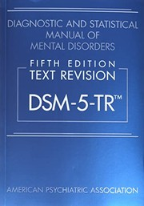

《DSM-5-TR（精神障碍诊断与统计手册第五版修订版）》
书·American Psychiatric Association, 2022·Diagnostic and Statistical Manual of Mental Disorders, Fifth Edition, Text Revision (DSM-5-TR)

美国精神障碍诊断的标准手册，是工具书而非入门读物。
- 作者
- American Psychiatric Association
- 年份
- 2022
- 难度
- 深读
- 类型
- 文献
- 所属学派
- DSM／ICD 诊断体系
- 核心理论
- DSM-III 的操作化诊断
版本
- 中文版 《精神障碍诊断与统计手册(第5版)(DSM-5)》 美国精神医学学会 · [美] 张道龙 等 译 · 北京大学出版社 · 2015 豆瓣 9.3 分（396 人评价） 豆瓣页面 ↗
- 英文版 Diagnostic and Statistical Manual of Mental Disorders, Fifth Edition, Text Revision (DSM-5-TR) American Psychiatric Association · American Psychiatric Association Publishing · 2022 Open Library ↗